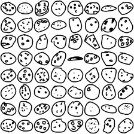

Datos: full_raw_.ndjson
Una GAN aprende a imitar un conjunto de datos: el generador crea dibujos falsos y el discriminador intenta distinguirlos de los reales. Aquí los datos reales salen del archivo crudo de Quick, Draw!: cada línea es un JSON con los trazos que dibujó una persona en 20 segundos.
drawing = lista de trazos [[x…], [y…], [t ms…]] en píxeles de pantalla. Se usan solo los dibujos con recognized: true, se escalan y centran en un lienzo de 256×256 y se reducen a 28×28 (784 píxeles en [−1, 1]).

Red neuronal Generadora (G)
Recibe un vector de ruido z de números aleatorios y lo transforma en un dibujo de 784 píxeles (28×28). Su objetivo es producir dibujos que el discriminador crea reales.
Red neuronal Discriminadora (D)
Recibe un dibujo de 784 píxeles (real o generado) y devuelve la probabilidad de que sea real. Su objetivo es no dejarse engañar por el generador.
Funciones de pérdida (Binary Cross Entropy)
La GAN original plantea un juego minimax: D maximiza y G minimiza
Como al inicio G puede quedarse sin gradiente, se usa la variante minimax modificada: G maximiza log D(G(z)). Ambas se calculan con BCE:
D aprende a decir 1 a lo real y 0 a lo falso; G aprende a que D diga 1 a sus dibujos. Optimizador Adam, lr = , β = (0.5, 0.999), batch = .
Valores del generador y del discriminador
D(x): probabilidad media que D asigna a dibujos reales. D(G(z)): probabilidad media que D asigna a los generados. En el equilibrio ideal ambas tienden a 0.5.
Estadísticas de los pesos tras el entrenamiento
Pérdidas por época
Resultado de la GAN · categoría
Mismo ruido z en cada época, para ver cómo aprende el generador. Época: